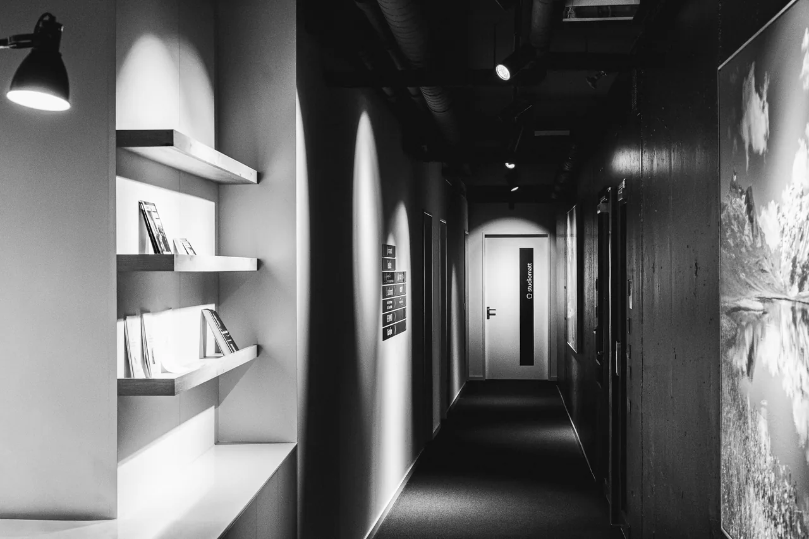
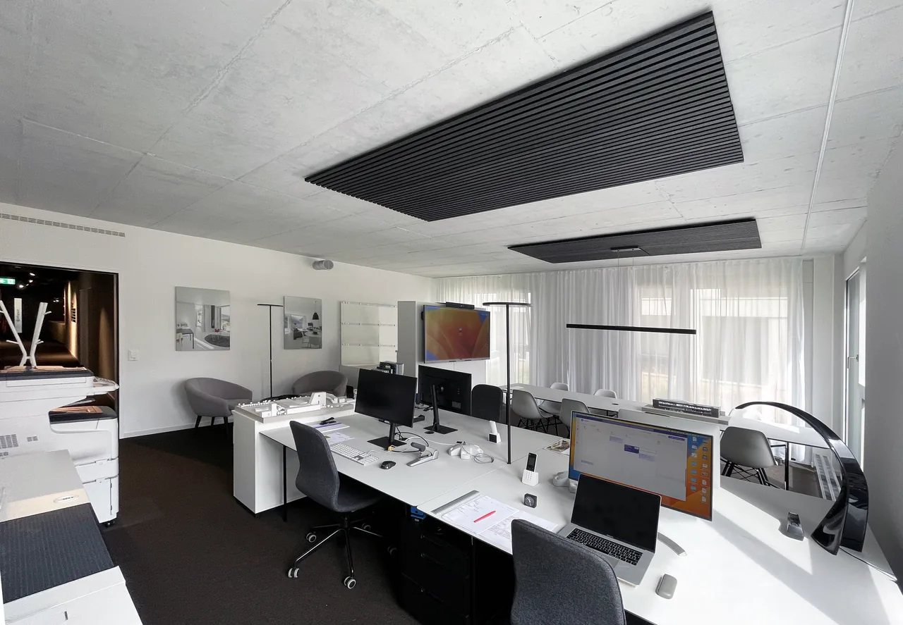
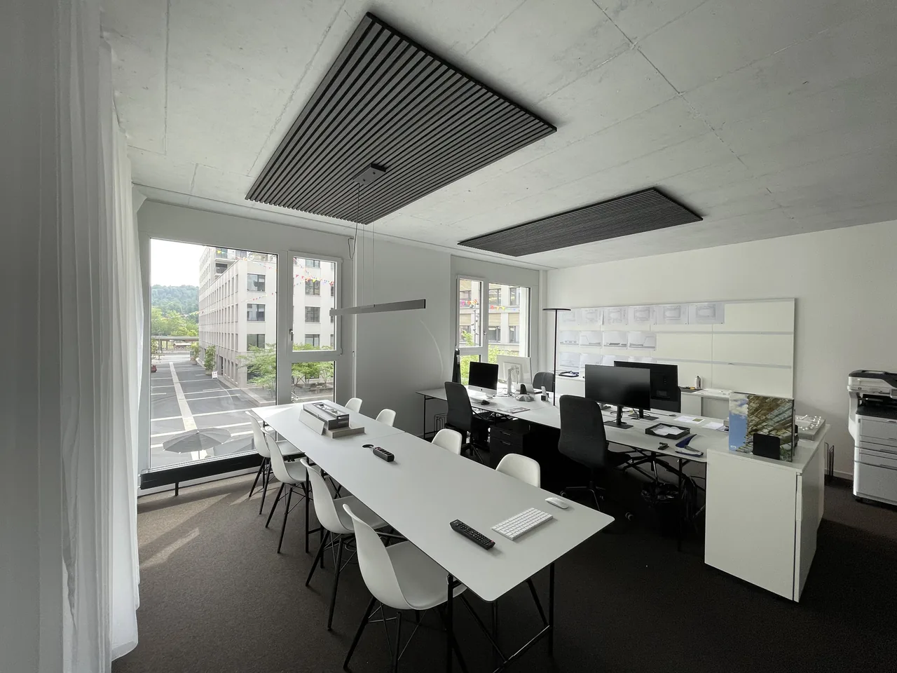

Bei studiomatt gehen wir Herausforderungen ganzheitlich an. Wir behalten den Überblick, denken vernetzt und suchen gemeinsam nach Möglichkeiten, die in der Praxis überzeugen. Dabei bringen wir Fachwissen, Erfahrung, Koordinationsstärke und vor allem die nötige Ausdauer mit, um Projekte konsequent voranzubringen.
Was uns dabei besonders wichtig ist: eine Zusammenarbeit auf Augenhöhe. Wir kommunizieren offen, klar und verlässlich – mit Auftraggebern, Planern und Spezialisten. Denn wir sind überzeugt, dass eine erfolgreiche Zusammenarbeit dort entsteht, wo alle Beteiligten früh eingebunden werden, wo Verantwortung übernommen und gemeinsam an einem Ziel gearbeitet wird.
Nach langjähriger Arbeit in verschiedenen Architekturbüros im In- und Ausland wurde die studiomatt mit Sitz in Kriens im Jahr 2020 durch Attilio Lavezzari neu gegründet. Aufgabe der studiomatt ist die Bearbeitung von vielfältigen Aufgaben, zusammen mit einem interdisziplinären Team aus einem bewährten Netzwerk. Die studiomatt verfasst erste Denkarbeiten und leitet das Team durch sämtliche Bauphasen sowie unterschiedlichsten Ausführungsmodellen; von den ersten strategischen Überlegungen bis hin zur Übergabe an den Auftraggeber. Wir unterstützen unsere Kunden und Auftraggeber, um effiziente, nachhaltige sowie zeitgemässe Entscheidungen herbeiführen zu können. Das breitgefächerte Know-How sowie die fachlichen Kompetenzen helfen uns in der täglichen Arbeit, um zusammen mit allen Beteiligten, die besten Lösungen zu erarbeiten und entwickeln. Die studiomatt bietet zudem die Übernahme diversen Bauherrenaufgaben an und ermöglicht damit eine professionelle Entlastung der Auftraggeber.
Ein weiterer, wichtiger Entwicklungsschritt der studiomatt erfolgte Mitte 2023; Die studiomatt ist in grössere Räumlichkeiten umgezogen. Das neue Büro am Mattenhof Kriens, mit urbanem Blick auf den Mattenhofplatz, bietet dank mehr Platz und modernster Infrastruktur die optimalen Voraussetzungen für den interdisziplinären Austausch im Team sowie die Möglichkeit zur Ausübung und Übernahme von arbeitsintensiveren Planungsarbeiten.

